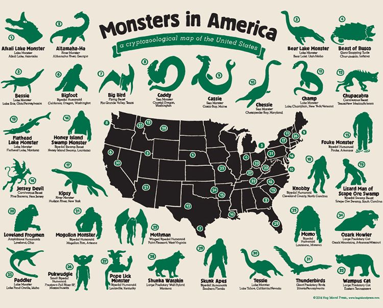

What is Cryptozoology?

Cryptozoology is a pseudoscience and subculture that aims to prove the existence of entities from the folklore record, such as Bigfoot, the Loch Ness Monster, the chupacabra, or the Mokele-mbembe. Cryptozoologists refer to these entities as cryptids, a term coined by the subculture. Because it does not follow the scientific method, cryptozoology is considered a pseudoscience by mainstream science: it is neither a branch of zoology nor folklore studies.